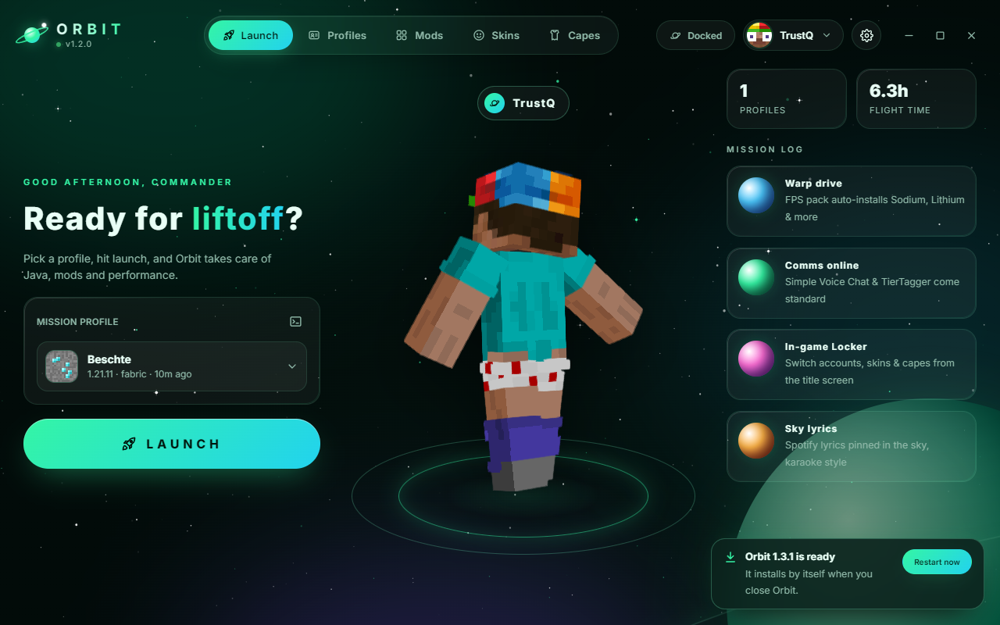
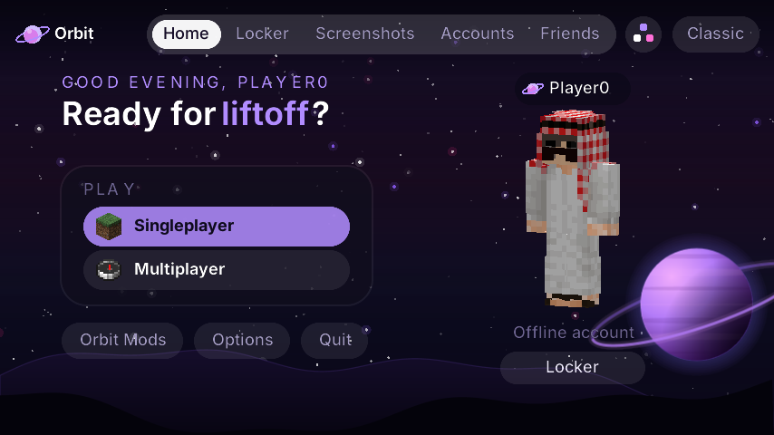

🚀
A launcher that does the work
Profiles, the right Java and Fabric are set up automatically. New profiles get Sodium, Lithium, FerriteCore, EntityCulling and more for higher FPS.
Free Minecraft launcher & client
Orbit sets up Java, Fabric and the fastest performance mods for you — then adds 40+ built-in mods, PvP tools, cosmetics your friends can see, and a clean new look for the whole game.

No mod hunting, no setup guides. Start Orbit, press Launch, play.
Profiles, the right Java and Fabric are set up automatically. New profiles get Sodium, Lithium, FerriteCore, EntityCulling and more for higher FPS.
Search and install mods, resource packs, shaders and modpacks right in the launcher. Already installed? Orbit tells you.
Zoom, Freelook, Motion Blur, Crosshair Painter, Sky Changer, Item Physics, Hitboxes, Waypoints and more — open the menu with Right Shift.
Target HUD, combo counter, reach display, damage numbers, pearl tracker, projectile predictor, fight stats, kill effects and custom hit colours.
Hats, wings, auras and Orbit capes — other Orbit players see what you wear, and the Orbit badge above your name.
Add friends by name and chat with them from the main menu, see who's online, and switch accounts without restarting the game.
A redesigned main menu, pause menu and options with live space backgrounds, accent colours and a drag-and-drop HUD designer.
Synced Spotify lyrics in the sky, a now-playing widget with controls, and "Playing Orbit Client" on your Discord profile.
New versions download in the background and install themselves when you close the launcher. Nothing to do.

The main menu, in the same clean style as the launcher.
It installs in seconds and adds a desktop shortcut.
Use the account that owns Minecraft: Java Edition.
Orbit prepares everything and starts the game.
Yes, completely.
Orbit is new and not code-signed yet, so Windows doesn't know it. In Edge, open the download menu (…), choose Keep → Keep anyway. When starting it, click More info → Run anyway. You only need to do this once — updates install by themselves. Only download Orbit from this site or our GitHub.
The Orbit mods run on Minecraft 1.21.11 with Fabric. The launcher can also start other versions and Forge, Quilt or NeoForge profiles.
Yes — sign in with the Microsoft account that owns Minecraft: Java Edition.
Both of you need Orbit 1.3.4 or newer and a Microsoft account. If nobody was online for a while, give it up to a minute after joining.
Orbit's mods are visual and quality-of-life features. Every server has its own rules — check them if you're unsure.